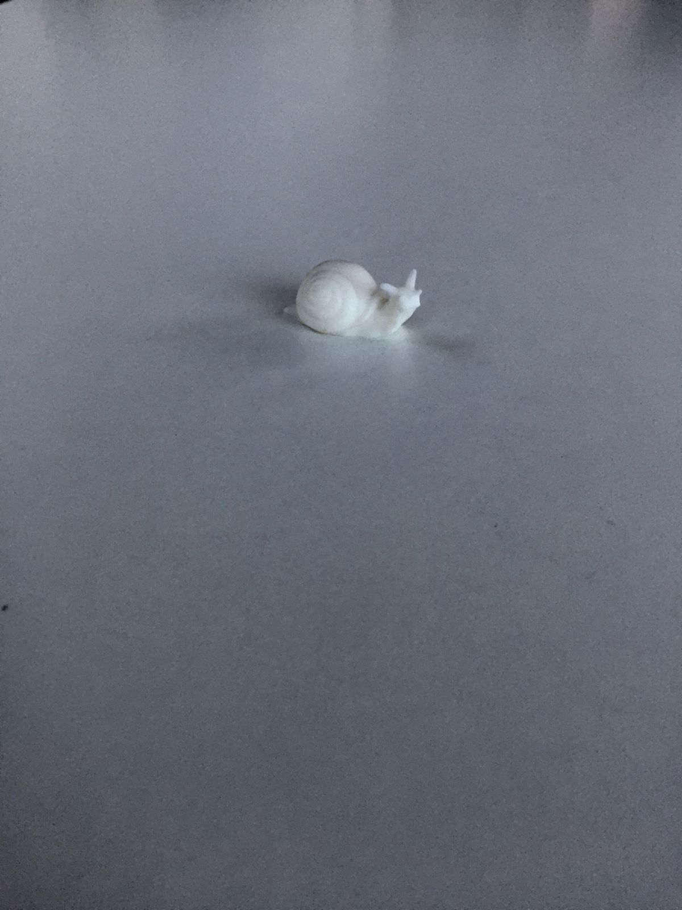

"Are You Excited?"

Over the past few days, I keep being asked: "Are you excited?"
My response has generally been: "I will be when I get on the plane."
In part, it's reflects what I've experienced in the past, in that I usually don't get excited for any trip until a few hours before I depart. But in part, it is an aspirational response. I am hedging, saying "not yet", delaying giving a more authentic answer. In truth, I am apprehensively nervous. I am not stressed. I am not anxious. I am just less excited than I thought that I would be. And that's OK.
I haven't been away from home for this long since I went to Switzerland as a summer research student in college. Back then I didn't have an apartment, a car, a job, a cat, a comfy bed—nothing that I was putting on pause. At the start of this trip, the feeling of the things left behind outweighs the things yet to come because the things yet to come have not yet arrived.
Knowing myself, I won't be excited until I start doing what I set out to do. So now it is time to go snowshoeing in Tahoe. A good first step.